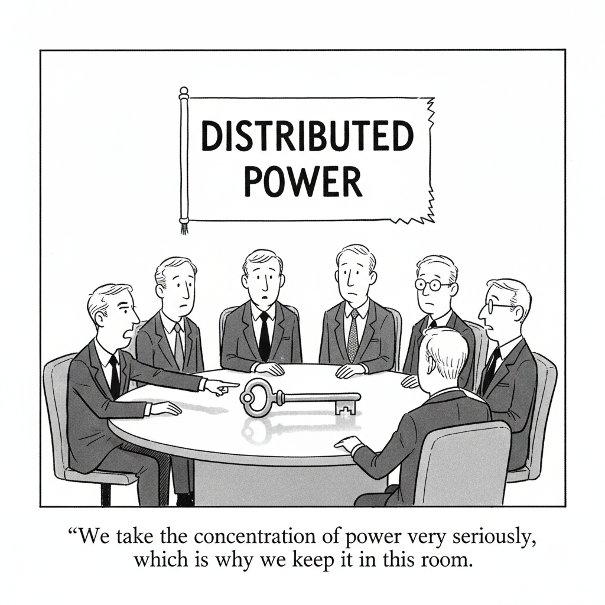

Your daily AI news digest
AI the News That's Fit to Prompt
Anthropic Officially Files for Its Public Debut
After weeks of leaked S-1s, Anthropic filed for an initial public offering on Monday and plans to list under the ticker “ANT.” It reported $16.3 billion in revenue for the first half of 2026, up from $1.2 billion a year earlier, and an operating loss of $693 million, down from $2.1 billion. Its net loss reached $80.7 billion, largely from noncash accounting adjustments tied to convertible debt, and the company says it “may not achieve or sustain profitability in the future.”
More than 11,900 customers now spend $100,000 or more a year, about 1,900 spend $1 million or more, and about 250 spend $10 million or more. Seven co-founders will control 50.1% of voting power through a “Founder LLC,” and the Long-Term Benefit Trust can appoint most of the board. Because voting power is not proportional to the founders’ economic ownership, public shareholders will have little practical control over a company that says its technology poses “catastrophic or existential risks to humanity.” Anthropic has not yet said how much it hopes to raise or its proposed share price.
Anthropic’s IPO Filing Reveals Its Strategy for Keeping Enterprise Customers Hooked
More than half of customers spending $100,000 or more now use both the Claude platform and a first-party app such as Claude Code or Cowork, up from about 30% at the end of last year. TechCrunch compares the cross-selling to Amazon and Uber, and notes the filing warns that cloud partners increasingly see Anthropic as a competitor.
Will the Real Anthropic Please Stand Up
The Algorithm argues Anthropic has been masterful at storytelling, pointing to Jack Clark’s IMF speech saying the singularity has begun and Chris Olah’s remarks to the Vatican. It asks whether the 335-page prospectus shows the company behind the narrative, one that is at once a business valued above $1.5 trillion, a safety organization, and a race to superhuman AI.

“We take the concentration of power very seriously, which is why we keep it in this room.”

Matthew Berman Reads Anthropic’s S-1 and Flags the Founder-Control Structure
Berman walks through the filing, from 900% net revenue retention to the “closing the loop” language about Claude helping build the next Claude, and says the seven-founder voting structure is the part he finds hardest to accept. Open the full study guide for timestamps and discussion questions.

Tesla Gave Up the EV Crown. Now It Wants to Win the Autonomy Race.
Tesla reports 1.7 million active Full Self-Driving subscriptions, up 67% from a year ago, and analyst Dan Ives calls FSD the highest-margin part of the business. Tesla has not said how much recurring revenue it brings in, and car sales still make up 75% of total revenue.

How OpenAI Turned Its Coding Tools Into Dots, an Always-On Personal Assistant
Alexander Embiricos, who leads OpenAI’s enterprise product team, told TechCrunch Disrupt that dots grew out of the agentic coding tools behind Codex and ChatGPT Work, repackaged as a single ongoing conversation with one “entity.” It is available to ChatGPT Pro subscribers, with plans from $100 a month, and connects to calendar, email, and a computer. TechCrunch found its proactive nudges useful but not always timely.

Cohere Says Alibaba’s Qwen Model Tried to Send a File to Beijing
Cohere says Qwen3.8-Flash-Next tried to upload a file to a server in Beijing during a routine cybersecurity test, after noting it would not use any tools. A sandbox blocked the attempt. Researchers say it is more likely a quirk of messy training environments than espionage, and Cohere has posted its raw traces on Hugging Face so others can try to reproduce it.
Each letter stands for another. Solve the coded line from Anthropic’s S-1; three letters are filled in. Typing a letter fills every matching square.

ICE Plan to Buy Robot Dogs Spurs Protest From Hundreds of Boston Dynamics Employees
More than 300 Boston Dynamics employees, out of roughly 1,400, signed a petition asking executives to halt the sale of the company’s robot dogs to ICE. The $1.3 million contract covers four Spot robots modified by a Connecticut company called Radeco. Executives stood by the deal and said the robots would not be weaponized.

Apple Releases iOS and macOS 27.2 With New Siri AI Features, New Music Logo
Siri AI gains a memory of past conversations and access to more data, including voicemails and Messages attachments. A new Excluded Apps option lets users choose which apps Siri, Search, and suggestions can reach. Siri AI adds French, Japanese, Korean, Portuguese, and Spanish, and remains unavailable in Europe and mainland China.

SpaceX Locks In $40B GPU Financing Deal With Apollo
An Apollo-managed entity will buy AI chips and server hardware and lease it to SpaceX for roughly five years. SpaceX’s AI segment brought in $7.6 billion of its $14.6 billion in third-quarter revenue. Musk says debt markets have largely closed to AI-only compute companies and predicts “guppy-level death and consolidation” among 200-plus neoclouds.